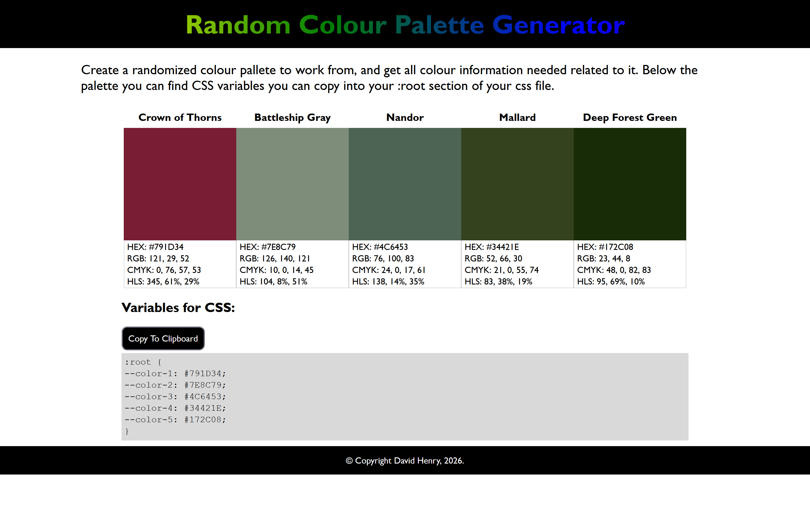

Random Colour Palette Generator
This smaller project uses two external APIs, Colormind.io and The Color API, to generate a complimentary 5-colour palette for web developers to work with. It generates a a new palette on refresh. Once generated, it not only gives the hex code of the colour, but the RGB, CMYK, and HSB values as well. Additionally, there is a button that copies all five hex codes onto the user's clipboard so they can be pasted into the root of a site's css file as css variables.

This was my first attempt to really use an external API on a website, so I wanted to do something simple but useful. Web developers are not always have the eye for colour, so I wanted to create a useful tool for them. The CMYK and HSB values that is output can also be handy for matching up colours when a project has both print and web components, ensuring a project's colour palette is uniform across multiple mediums.
I used a second API, The Color API, to translate the palette Colormind produces from hex to the other formats, somehting Colormind does not have the functionality for.
I do have further plans for this, such as locking a color, then getting a new colour palette that compliments the locked colours on refresh. I'll likely do this with a cookie, remembering the locked variables between refreshes. Getting the Pantone codes is also a possibility, though that may prove trickier unless there's a third API for finding a pantone of a CMYK value.